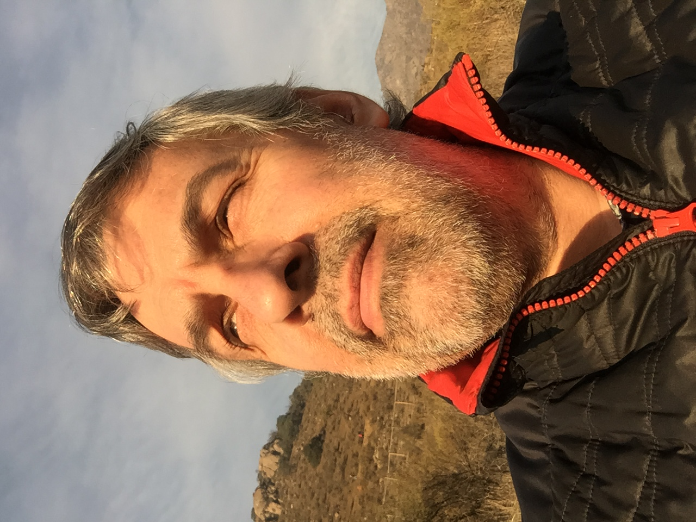

Curriculum Vitae

Juan Carlos Poblete Verna
Resumen
Experiencia profesional de 37 años en:
- Publicidad: Trabajó durante 11 años en importantes agencias de publicidad del medio nacional en el área creativa, desarrollando campañas publicitarias, estrategias de comunicación y posicionamiento de marcas para reconocidas marcas, logrando distinciones en eventos nacionales e internacionales.
- Diseño: 26 años ejerciendo como profesional freelancer, gestionando proyectos de diseño aplicado en packaging, editorial, punto de venta, publicitario, ferias y web entre otros.
- Comunicación: Adicional a su desempeño como diseñador, presta asesorías en comunicación estratégica y marketing.
- Educación: Desde hace 25 años comparte sus conocimientos y experiencia en diseño, publicidad y comunicación, ejerciendo la docencia universitaria en diferentes instituciones de educación superior de Santiago de Chile.
Entre los años 2008 -2018, se desempeñó en diversos cargos directivos en la Universidad del Pacífico.
- Emprendimiento: A partir del año 2021, inicia el desarrollo de un emprendimiento personal en el área del Turismo Creativo en la ciudad de Puerto Varas, como resultado de capacitaciones online cursadas durante los dos años de pandemia.
Datos Personales
- Nombre: Juan Carlos Poblete Verna
- Lugar de Nacimiento: Valparaíso - Chile
- Fecha de Nacimiento: 14 de Julio de 1960
Formación
- Escolar:
Scuola Italiana de Valparaíso (1966-1974).
Liceo N°1 Eduardo de la Barra, Valparaíso (1975-1977)
- Universitaria:
Escuela de Diseño, Universidad de Valparaíso (1979-1985)
Licenciado en Diseño (1984)
Titulado en Diseño con mención en Gráfica (1985)
- Posgrado:
Magíster en Comunicación Estratégica, Universidad del Pacífico (2005-2006)
Cursos
- SERNATUR. Programa SIGO Innovación (2021 2021)
- CORFO-PLANEAS. Escuela de Emprendimiento en Turismo Creativo (2020-2021)
- U. DE CHILE. Formulación de Proyectos para el Liderazgo Social (2022)
- ALEPH-D.A.E. Digital Ad Degree-Marketing Digital SPA06 (2022)
- EGG. Programación desde Cero con PSeInt (2022)
- DESAFÍO LATAM. Itroducción al Desarrollo Web (Cursando)
Publicaciones
- Investigación: “Programa de apoyo y seguimiento a las/los estudiantes de nuevo ingreso, de la Facultad de Comunicaciones de la Universidad del Pacífico”.
Co-investigador. 2010, Buenas Prácticas del Aseguramiento de la Calidad de la Educación Superior en Chile, Ediciones CNA-Chile.
- Ha escrito artículos de opinión en el ámbito de las comunicaciones para el diario El Mercurio, revista Gestión y revista Qué Pasa.
Habilidades
Desarrollada habilidad creativa y poder de observación en la propuesta de ideas. Reflexivo y analítico. Facilidad para establecer buenas relaciones interpersonales y para liderar equipos de trabajo.
Proactivo, con capacidad para adaptarse rápidamente a cambios de escenario y situaciones. De espíritu inquieto e inquisitivo, apasionado por el conocimiento y la investigación con rigor científico.
Responsable, diligente y perseverante en sus deberes.
Fuente: LinkedIn Juan C. Poblete